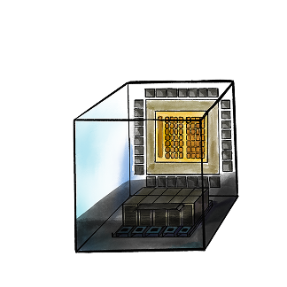
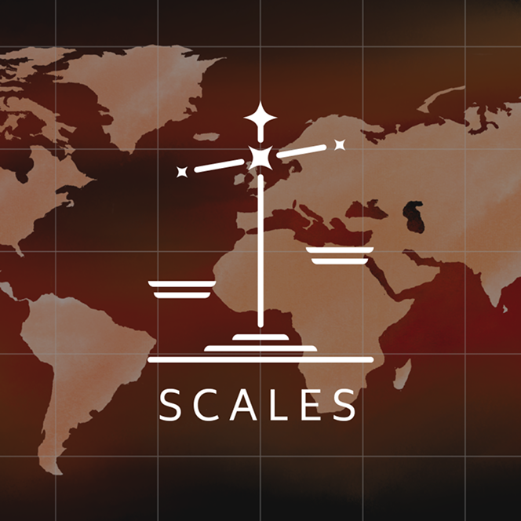
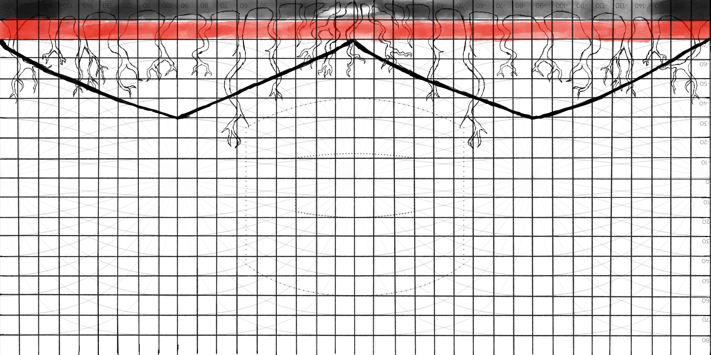

Big Tech
Motivated by profit, progress and the imperative of building AGI.
A Decision-Making Game on the Hidden Costs of AI Development
Game design · Systems design · Serious games · WebXR · Critical design · AI ethics.
* Awarded best thesis at University of Europe for Applied Sciences in July 2026.
Client:
-
Role:
Concept, Design & Development
Year:
2026
Team:
-
The physical, social and political costs of AI are difficult to identify and public debate rarely makes them concrete. For my masters thesis I researched the cost of developing AI and the decisions that lead up to this cost.
An interactive game that educates player on the complexity of developing artificial intelligence. It places the viewer inside a gamified model of their data territory as they navigate how technological progress is deeply entangled with physical, social, and political costs.
I adapted Michael Hardt and Antonio Negri's framework of Empire into three playable factions
Players take decisions as they navigate how technological progress is entangled with physical, social, and political costs.
Motivated by profit, progress and the imperative of building AGI.
Motivated by military and technological supremacy.
The productive force of our world. They are the ones exploited by others who seek power.
Built decisions around five ways that AI impacts society.
Concerned with questions of autonomy, independence, lawful control.
Concerned with questions related to the self, civic, and collective recognition.
Concerned with questions of institutional or platform leverage and agency.

Concerned with questions of explainability and opacity of systems.
Tracks resource consumption and compares them against projected baselines.
Decision impact scores and determines who wins or if ecological collapse is triggered. A decision matrix was used with a list of decisions unique to each territory.



Turning theory into rules demanded a precision writing never did. Every argument about Big Tech or the State had to become a number that could tip the game. In playtests, players argued their way to decisions together, which showed me the game works best as a prompt for debate rather than a lesson.